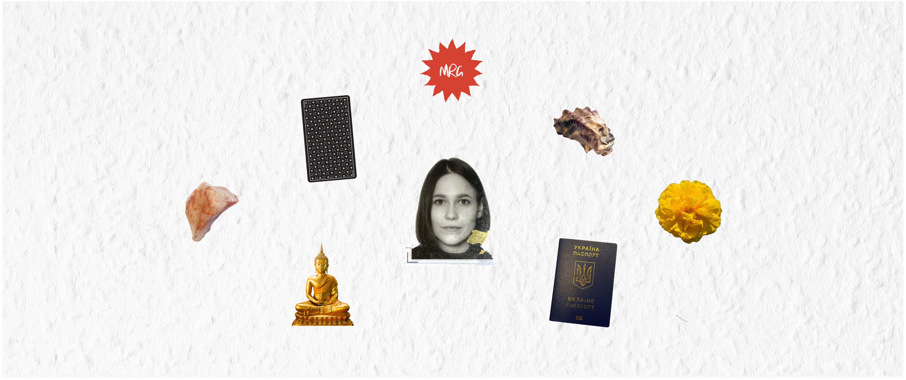

My Portfolio


Project overview
Main links
At the beginning of 2026, I found myself at a turning point. After going from a Berlin-based business consultant startup where I had worn many hats simultaneously — UX/UI designer, graphic designer, and motion designer — I faced the challenge that every designer eventually confronts: how do I show who I am, not just what I can do?
My background is eight years teaching English as a second language. A move to Berlin. Five languages. Nature watching. A recent monastery retreat in Thailand. These weren’t peripheral details — they were the raw material of an identity.
I wanted to create a portfolio that looked like me, not like a design template everyone else was using.